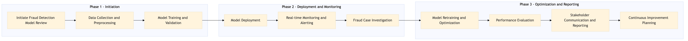

This process document outlines the management of a real-time fraud detection model for Expedia Group's OTA and TMC systems, ensuring timely identification and mitigation of fraudulent activities.
| Trigger | Detection of anomalous transaction patterns or receipt of alerts from monitoring tools. |
| Outcome | Successful implementation and continuous improvement of the fraud detection model, leading to reduced instances of fraud and enhanced system security. |
| Systems | AWS SageMaker Snowflake Kafka Tableau Salesforce Concur T2 |

Click to enlarge
| Step | Name & Pain Point | Role | System | Input | Output | KPI | Flags |
|---|---|---|---|---|---|---|---|
| 1.1 | Initiate Fraud Detection Model Review Balancing model sensitivity and false positive rates | Data Scientist | AWS SageMaker | Historical transaction data, current model performance metrics | Updated fraud detection model specifications | Model accuracy improvement by 5% | ⚠ Exception |
| 1.2 | Data Collection and Preprocessing Handling large volumes of real-time data efficiently | Data Engineer | Snowflake, Kafka | Raw transaction data from OTA and TMC systems | Cleaned and preprocessed data for model training | Data processing time reduced by 20% | ⚠ Exception |
| 1.3 | Model Training and Validation Overfitting or underfitting the model | Data Scientist | AWS SageMaker | Preprocessed data, model specifications | Trained fraud detection model | Validation accuracy above 95% | ◆ Decision |
| 1.4 | Model Deployment Ensuring seamless integration with existing systems | DevOps Engineer | AWS SageMaker, Kafka | Trained model, deployment scripts | Deployed fraud detection model in real-time environment | Deployment time reduced by 30% | ⚠ Exception |
| 1.5 | Real-time Monitoring and Alerting High volume of false positives | Data Engineer, Security Analyst | Kafka, Tableau, Salesforce | Real-time transaction data, model predictions | Alerts for potential fraud cases | Response time to alerts reduced by 10% | ◆ Decision |
| 1.6 | Fraud Case Investigation Complexity of fraud cases | Security Analyst, Compliance Officer | Salesforce, Concur T2 | Alerts from monitoring system | Investigation report and action plan | Investigation time reduced by 15% | ◆ Decision⚠ Exception |
| 1.7 | Model Retraining and Optimization Continuous learning and adaptation to evolving fraud tactics | Data Scientist | AWS SageMaker, Snowflake | Investigation findings, new data | Optimized fraud detection model | Model performance improvement by 10% | ⚠ Exception |
| 1.8 | Performance Evaluation Aligning model performance with business objectives | Data Scientist, Business Analyst | Tableau, Salesforce | Model performance metrics, business KPIs | Evaluation report and recommendations | Overall fraud detection rate improved by 20% | ◆ Decision |
| 1.9 | Stakeholder Communication and Reporting Effective communication of technical insights to non-technical stakeholders | Project Manager, Data Scientist | Salesforce, Tableau | Evaluation report, stakeholder feedback | Communication plan and reporting dashboard | Stakeholder satisfaction increased by 10% | ⚠ Exception |
| 1.10 | Continuous Improvement Planning Prioritizing improvements in a dynamic environment | Project Manager, Data Scientist | Salesforce, Tableau | Evaluation report, business requirements | Improvement plan and roadmap | Defined improvement initiatives for next cycle | ◆ Decision |